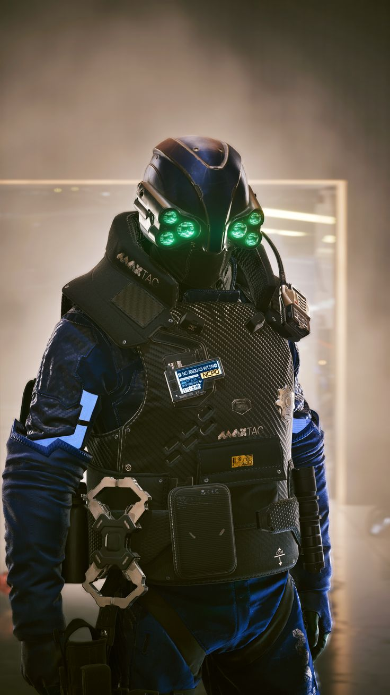

"El mejor lugar del mundo!"
¡Te damos la bienvenida a la pagina oficial de Night City!
Aqui podras tener un pequeño y ligero vistazo a lo que nuestra hermosa ciudad te puede ofrecer
Night City cuenta con:
¡el famoso Trauma Team!
Ellos llegaran en cuestion de minutos a salvar tu vida
(Siempre y cuando estes subscripto y tengas los edis para pagarles, claro)

Buscar Informacion e imagenes de cyberware o matasanos
Lo que sea mas interesante y dentro de todo "legal" en el mundo de Cyberpunk
capaz de mantener Night City segura de los malechores.
El escuadron de Elite que forma parte de
nuestra policia local y temido por todos los cyberpsicopatas
¡MaxTac!
